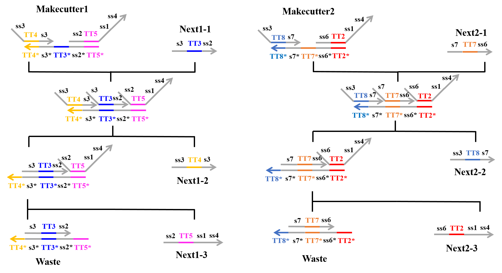

|
 |
Design
1. What is logic gate
A logic gate is a circuit that carries out a logic operation. In general, a logic gate has two inputs, which are divided into high and low according to a threshold.
A logic circuit is the smallest modules making up a digital circuit and is therefore essential for electrical products. Similarly, when we produce some systems, we need the smallest modules; accordingly, it is necessary to use the smallest modules when we produce something in DNA reaction systems. Therefore, we need a logic gate when we produce systems using DNA.
ANDgates, ORgates, and NOTgates can be used in logic gates. Their functions are expressed by a truth table. ANDgates, ORgates, and NOTgates are called basic logic gates. In general, we can make one-step large modules, i.e., XORgates, NORgates, and NANDgates, by combining basic logic gates. Moreover, we can make larger modules, e.g., flip-flops, and registers by combining XOR, NOR, NAND, and basic logical gates. We can make a product such as a microcomputer by repeating combining modules. Because computers are machines for computing, as the name suggests, modules for computing are required. One such module is called an accumulator, which requires XOR. Like this, XOR is used in various ways. Thus, XOR is an important module which is worthy to be made.
2. What is XOR?
XOR works as shown by a truth Table 1. The XORgate used in our analysis considers the concentration of DNA as the input in a DNA reaction system. The output of the system is “high” when only “high” or “low” is input as the concentrations; otherwise, when “high-high” or “low-low” are input as the concentrations, the output is “low”.
Table1:XOR truth table

As described in section 1, a large module is made by combining small modules. First, we considered creating XOR by combining AND, OR, and NOT; however, many DNA strands are required, and the reaction system becomes quite complex. Complex reaction systems are difficult to use, particularly for DNA reaction systems, because complex conditions tend to favor reactions that are not the target reaction. Moreover, more complex reaction systems exhibit slower reaction velocities. In order to overcome these problems, we designed the “DNA Interference Canceller”, as explained below.
3. DNA Interference Canceller
3.1 What is the DNA Interference Canceller?
The XORgate presented in this report was designated the DNA Interference Canceller. The DNA Interference Canceller overcame the shortcomings of XOR by using a combinational circuit. XOR combined with AND, OR, and NOT requires many DNA strands (i.e., 83 strands); however, our DNA Interference Canceller alone can perform the functions of XOR using a few strands (i.e., 31 strands). Moreover, the DNA Interference Canceller is faster than combinational XOR with regard to the reaction velocity. The difference in the reaction velocity is 150 min.
3.2 Reaction path
We designed the DNA Interference Canceller based on strand displacement reactions. This gate was composed of four DNA strand displacement reaction processes. Each of these reaction processes is explained below.
First Process:
As shown in Figure 1, “Input1”, including an ss1 TT1 s3 sequence, was single-stranded DNA (ssDNA), whereas “Makestopper1” was double-stranded DNA (dsDNA), which included the toehold domain TT1*. “Input1” caused a strand displacement reaction based on TT1, yielding “Stop1”, “Next1-1”, and “Waste”. Similarly, “Input2” caused a strand displacement reaction with “Makestopper2” and resulted in “Stop2”, “Next2-1”, and “Waste”.
Second Process:
Next, “Next1-1” which was produced from the first process and “Makecutter1” caused a strand displacement reaction, and “Makecutter1” was replaced with “Next1-2”, “Next1-3”, and “Waste”. Similarly, “Makecutter2” caused a strand displacement reaction with “Next2-1” produced in the first process, creating “Next2-2”, “Next2-3”, and “Waste”. Figure 2 shows the strand displacement model for the second process.

Third Process:
In this step, four types of reactions can occur, as explained below (Figures 3~6).
1)
“Next1-3” which was produced during the second process and “Makeoutput1” caused a strand displacement reaction based on TT5, and “Next1-2” then caused a strand displacement reaction based on TT4. As a result, two types of “Waste” and “Next1-4” were produced. Similarly, “Next2-3” which was produced in the second process and “Makeoutput2” caused a strand displacement reaction based on TT2, and “Next2-2” then caused a strand displacement reaction based on TT8. As a result, two types of “Waste” and “Next2-4” were produced.

2)
“Stop2” which was produced during the first process and “Makeoutput1” caused a strand displacement reaction based on TT5, and “Next1-2” then caused a strand displacement reaction based on TT4. As a result, “Waste” and “Next1-6” were produced. Similarly, “Stop1” which was produced during the first process and “Makeoutput2” caused a strand displacement reaction based on TT2, and “Next2-2” then caused a strand displacement reaction based on TT8. As a result, “Waste” and “Next2-6” were produced.

3)
“Next1-2” which was produced in the second process and “Makeoutput1” caused a strand displacement reaction based on TT4, and “Next1-3” then caused a strand displacement reaction based on TT5. As a result, two types of “Waste” and “Next1-4” were produced. Similarly, “Next2-2” which was produced during the second process and “Makeoutput2” caused a strand displacement reaction based on TT8, and “Next2-3” then caused a strand displacement reaction based on TT2. As a result, two types of “Waste” and “Next2-4” were produced.

4)
“Next1-2” which was produced during the second process and “Makeoutput1” caused a strand displacement reaction based on TT4, and “Stop2” then caused a strand displacement reaction based on TT5. As a result, “Nexr1-5” and “Waste” were produced. Similarly, “Next2-2” which was produced in the second process and “Makeoutput2” caused a strand displacement reaction based on TT8, and “Stop1” then caused a strand displacement reaction based on TT2. As a result, “Next2-5” and “Waste” were produced.

In reactions 1) and 2) above, “Makeoutput1” caused a strand displacement reaction based on TT5 and then TT4. “Makeoutput2” caused a strand displacement reaction based on TT2 and then TT8. In contrast, for reactions 3) and 4) above, “Makeoutput1” caused a strand displacement reaction based on TT4 and then TT5, whereas “Makeoutput2” caused a strand displacement reaction based on TT8 and then TT2.
As shown in Figures 4 and 6, the toehold domains stTT5* of “Makeoutput1”, stTT2* of “Makeoutput2”, stTT5 of “Stop2”, and stTT2 of “Stop1” consisted of seven bases. In contrast, the toehold domains TT5 of “Next1-3” and TT2 of “Next2-3” consisted of five bases. Therefore, in terms of the length of the toehold, the strand displacement reaction based on stTT5 was faster than that based on TT5. Additionally the strand displacement reaction based on stTT2 was faster than that based on TT2. In other words, four types of reactions (1?4) depended on the concentrations of “Next1-3”, “Stop2”, “Next2-3”, and “Stop1”. When the concentration of “Next1-3” was higher than that of “Stop2”, reaction 1) or reaction 3) would occur. In contrast, if the concentration of “Stop2” was higher than that of “Next1-3”, reaction 2) or reaction 4) could occur. Similarly, when the concentration of “Next2-3” was higher than that of “Stop1”, reaction 1) or reaction 3) could occur, whereas if the concentration of “Stop1” was higher than that of “Next2-3”, reaction 2) or reaction 4) could occur. Each concentration of “Next1-3”, “Stop2”, “Next2-3”, and “Stop1” depended on that of “Input1” or “Input2”; accordingly, we defined those four concentrations using the concentrations of “Input1” and “Input2”.
Fourth Process:
Finally, “Next1-4” or “Next2-4” which was produced in the third process and “Fluorescence” caused a strand displacement reaction, and “Fluorescence” was replaced with “Fluorescence output” and “Waste”. We designed fluorescent molecules on the 5′ end of ss3 and quencher molecules on the 3′ end of ss3*. Therefore, when “Next1-4” (or “Next2-4”) and “Fluorescence” caused a strand displacement reaction, we could observe fluorescence. Figure 7 shows a strand displacement model for the fourth process.